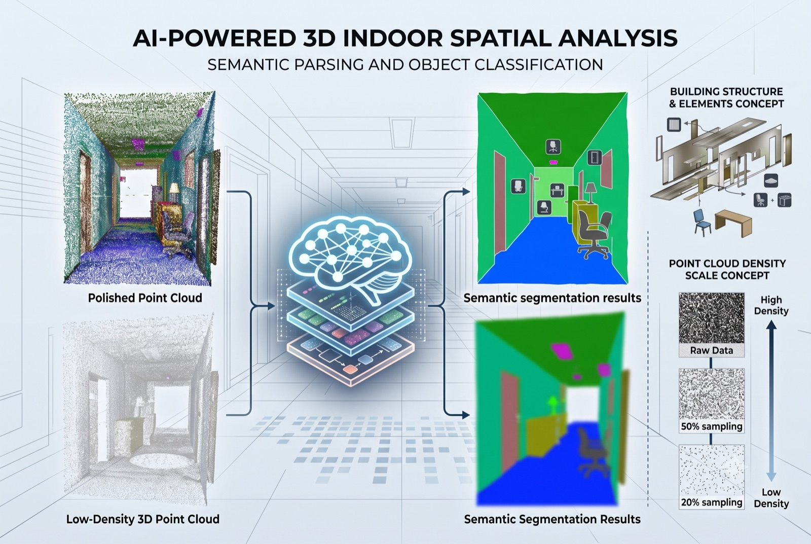
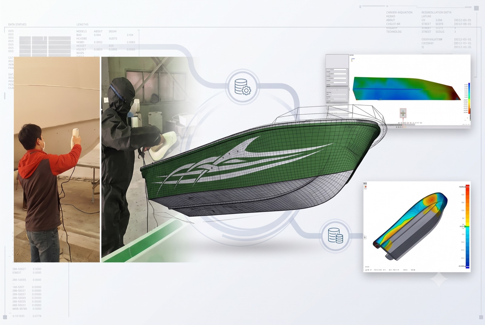
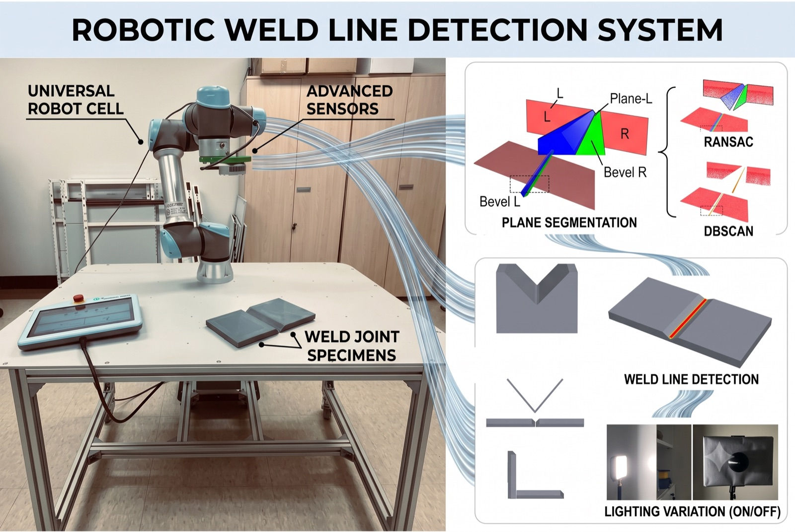

3D Capture & Reconstruction
대상과 현장 조건에 맞는 3D 스캐닝부터 정합, 기준 좌표, 역설계와 제작 보조 데이터까지 연결합니다.
- 다양한 규모의 3D 스캐닝
- Scan-to-CAD·역설계
- 3D 프린팅 지그·시제품
Scan to Execution
현장 스캔, 공간 AI, 품질검사, 피지컬AI를 하나의 데이터 흐름으로 확인할 수 있습니다.

ACTIVE DATA FLOW
선박블록, 카고홀드, 몰드, 배관과 작업공간을 포인트클라우드·사진·CAD 기준으로 묶습니다.
Point cloud / Photo / CAD referenceThree Solution Pillars
장비 판매보다 프로젝트의 입력 데이터, 판단 기준, 필요한 결과물에 맞춰 범위를 구성합니다.
대상과 현장 조건에 맞는 3D 스캐닝부터 정합, 기준 좌표, 역설계와 제작 보조 데이터까지 연결합니다.
포인트클라우드에서 객체와 공간 관계를 읽고 편차, 허용오차, 검사 우선순위를 판단 자료로 정리합니다.
실제 작업공간과 센서 조건을 반영해 로봇 경로, 충돌 후보, 용접선과 실행 좌표를 검토합니다.
Applied Cases
선박·제조 현장의 스캔 데이터가 실제 검사, 인식, 자동화 데이터로 이어진 사례입니다.
조선소 컨테이너선 카고홀드 포인트클라우드에서 구조물과 작업공간을 인식하고, 객체 분할·공간 관계·검사 기준 데이터를 자동화 모듈로 정리합니다.

조선소 LNGC 화물창 편평도 계측 과정에서 스캐폴딩 시스템을 탐지·분할하기 위한 딥러닝 기반 포인트클라우드 처리와 후처리 연구를 수행했습니다.

소형선박과 양산몰드의 스캔 데이터를 기준 형상과 비교해 정도관리 및 공정개선 가능성을 검증했습니다.

선박블록 포인트클라우드 환경, 3D 비전 센서, 3D 프린팅 시험편을 연결해 로봇 경로·충돌·접근성·용접선 추출 가능성을 검토합니다.

Operating Model
단순 3D 스캐닝 결과 확인에서 벗어나, 스캔 데이터를 인공지능으로 지능화해 검사·역설계·품질판정·피지컬AI 실행 데이터까지 확장할 수 있는 기반을 만듭니다.
포인트클라우드, CAD, 사진, 검사 기준과 현장 제약을 확인합니다.
좌표계, 기준 형상, 허용 오차와 판정 항목을 정의합니다.
편차맵, 특징 추출, 객체 분할, 공간추론과 리포트 형식을 검증합니다.
검사 리포트, CAD 재구성, 지그 설계와 피지컬AI 실행 데이터로 납품합니다.
Research Backbone by OPTLab
국립목포해양대학교 최적선박생산기술연구실의 조선소·제조 현장 공동 연구를 바탕으로 3D 스캐닝, 품질관리, 역설계, 기계학습, 적층가공, 협동로봇 실적을 Optimize3D의 기술 기반으로 사용합니다.
Contact
포인트클라우드, CAD, 사진, 검사 기준, 현장 문제 중 하나만 있어도 적용 범위를 함께 정리할 수 있습니다.